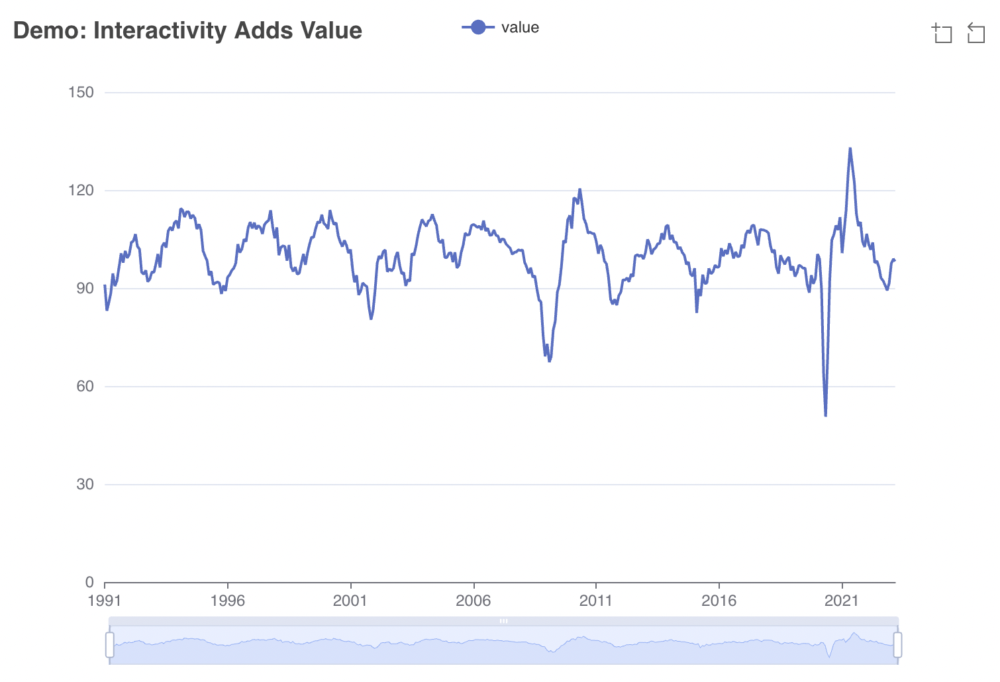

library(echarts4r)
library(kofdata)
library(tsbox)
tsl <- get_time_series('ch.kof.barometer')
t_df <- ts_df(tsl$ch.kof.barometer)
t_df |>
e_charts(time) |>
e_line(value, symbol = "none") |>
e_datazoom(type = "slider") |>
e_title("Demo: Interactivity Adds Value")10 Publishing and Reporting
Business analysts are used to reporting to management and/or clients regularly. Modern academic research has a similar need for regular updates: Data might get revised or otherwise updated, journals, reviewers and readers will ask for reproducible research. Dissemination of datasets and results in visually appealing as well as machine-readable fashion are important academic, private and public data workers alike.
Because of frequent updates and reproducibility, manually composed outlets become less sustainable. Luckily, Markdown-based reporting offers great solutions for presentations, websites, reports, blogs, office documents or even printed output. Document converters can turn Markdown into HTML/CSS/JavaScript output for flexible use in a standard web browser. Likewise, Markdown renders to PDF or even Microsoft Word.
Approaches such as Quarto1 (J. J. Allaire et al. 2022), RMarkdown (J. Allaire et al. 2022) or Jupyter Notebooks (Beg et al. 2021) mix plain text with dynamically rendered code chunks that create tables or figures and embed these into the document in the right size and spot. Such a setup is the basis to fully automate the way from analysis to report no matter whether the outlet is printed, a Word document, a presentation, blog or website.
10.1 Getting Started with a Simple Report
The simplest form of such a Markdown-based output, is a simple HTML report.
To those of us without a web development past or present, HTML may rather sound daunting than simple. But hear me out: HTML is (a) a lot more useful and flexible than newcomers might think and (b) simple indeed: HTML is text, does not need LaTeX to be rendered from Markdown like PDF, and can be displayed by web browsers on a plethora of devices. Plus, based on HTML, you can create (fancy) presentations, websites or simple reports. With the self-contained option, you can even embed included files such as images into one single HTML document using byte encoding. That way, you can easily share a report that can be viewed on any device with a web browser across different operating systems and setups.
To see a Markdown process in action, consider the following basic example of Markdown syntax:
#| output: asis
### This is a level three header
This is plain text *this is italic*
and **this is bold**
### This is another level three header
more textWhen rendered, the above Markdown turns into the below output, stored in HTML and CSS files.
10.1.1 This is a level three header
This is plain text this is italic and this is bold
10.1.2 This is another level three header
more text
10.2 Static Website Generators
Once we understood how the output files are created, let’s take a more in-depth look at how a report goes online in fully automated fashion from computation to a website. In a nutshell, static website generators turn Markdown code into a combination of HTML, CSS and JavaScript, so a web browser can display the result. The Go based Hugo2 or the classic Jekyll3 are popular static website generator approaches to run a website or blog.
Approaches such as the {distill} R package (Dervieux et al. 2022) or Quarto, the new kid on the block, add a data science and analytics flavor to the static website generator approach: Those implementations allow running analytics’ code at render time. Quarto documents, for example, are text files that contain Markdown text and possibly code chunks in the same documents. When rendered, the analytics code runs first, potentially creating output such as tables or figures. If necessary, this output is stored in separate files and smoothly integrated into the main document that is about to be rendered afterward.
Rendered output often consists of multiple files such as HTML documents, CSS style information, JavaScript code or images. Because this may be fine for websites but inconvenient for presentations or the exchange of reports, analytics-minded renderers such as Quarto offer a self-contained option. When enabled, Quarto renders a single self-contained, encoded HTML file that contains everything from JavaScript to images.
10.3 Hosting Static Websites
Because the requirements of a static website are minimal, we can essentially use the simplest website host possible to host our static site. Unlike with content management system approaches such as WordPress, static websites do not need server side scripting languages or databases. This simplicity allows hosting static websites on a plethora of cheap hosters, including many free plans.
10.3.1 GitHub Pages
One excellent and simple solution to host blogs, personal websites, online documentation or presentations is to use the offerings of major git providers such as GitHub’s GitHub Pages4. Though originally meant to be used with themes provided by GitHub and Markdown rendered by Jekyll on GitHub’s servers, GitHub Pages became the home of an abundance of static sites rendered by a wide array of static website generators.
All you need is a repository on GitHub to host the static files. You can activate GitHub Pages for your repository and choose whether you rather want the rendered files to be on a separate branch named gh-pages or in a subfolder of your root directory (mostly docs). Personally, I favor using a separate gh-pages branch because git would track every single change made to the automatically rendered content, leading to a messy git history.
By convention, the corresponding static website of a git repository is exposed at <username>.github.io/<repository-name>. For GitHub organizations which are popular to group repositories, the exposed URL would be <orgname>.github.io/<repository-name>.
Note
Note that the online version of the book you are currently reading is hosted in very similar fashion: rse-book.github.io
10.3.2 GitHub Actions
Hosting a website on a modern git platform comes with an intriguing option: the use of continuous integration tools, as discussed in Chapter 8 on automation. CI/CD is capable of not only rendering Markdown, but can even run computations and virtually any prerequisite step thanks to the underlying docker technology. CI/CD certainly introduces a setup hurdle, but it allows integrating users who do not have the necessary stack installed to execute the render process locally.
10.3.3 Netlify
The Netlify5 platform does not host git repositories like GitHub or Bitbucket, but it rather focuses on the build part. Netlify supports the user in setting up the build process and offers a few add-ons such as Netlify forms to allow for website features that can process user interaction such as online forms. Also, unlike git platforms, Netlify integrates domain purchase into its own platform. Note that Netlify and git are complementary, not mutually exclusive approaches. Platforms like Netlify and GitHub use application programming interfaces (APIs) to communicate with each other, allowing to trigger Netlify builds based on changes to a GitHub repositories.
Basic GitHub Pages setups are good enough for online documentation of most software or other sites that simply display static content. Netlify cannot only improve convenience when using advanced features, but it can also extend possibilities for static websites when needed.
10.4 Visualization
Visualization is a powerful tool to communicate insights derived from data analysis. Good visual communication can not only summarize large datasets, but it also can make your report – and therefore your insights – accessible to a wider audience. No matter if you are working on an online outlet or a printed publication of your analysis, it is safe to say that either channel benefits from aesthetically pleasant and concise visualization. Proficiency in data visualization is an indispensable part of a researcher’s or analyst’s toolbox.
Although plots may look similar across channels, opportunities and challenges plots optimized for online use and traditional printed figures are substantially different. Obviously, the beholder cannot interactively adjust parameters in printed images, while online visualization can be interactive and needs to adapt to varying screens and devices. Hence, the visualization toolbox offers libraries with very different approaches.
10.4.1 Rendered Graphs
The idea of visualization libraries that create rendered graphs is straightforward to understand. Libraries such as R’s ggplot2 (Wickham 2016) or Python’s matplotlib (Hunter 2007) fix the dots per inch (dpi) at render time. When writing to disk, such a graph is typically saved as a .png or .jpg file6. To the end user, handling such graphs is rather intuitive, as it feels similar to handling photos or screenshots: We have to handle single image files that we can easily preview with onboard tools of all major operating systems. But just like with a photo, if the resolution of an existing image is too small for our next use case, scaling the image up will lead to interpolation, i.e., loss in quality. To see the effect, take a closer look at the two .png files below: The second image doubles the width of the first image. Because of interpolation, the text looks blurred, particularly in its curves.
A streamlined publication workflow, such as the Quarto-based approach described above, mitigates the problem because this type of workflow automation reduces the effort of resizing, re-rendering and fitting graphs into the current document. Further mitigation comes from extensions packages such as R’s gganimate (Pedersen and Robinson 2022) that allows to animate graphs created with ggplot2. Though you might miss out on bleeding-edge interaction and the maximum flexibility of libraries with an online focus, rendered graphs created with a powerful library such as ggplot or matplotlib are a solid way to go for most people’s use cases. The likes of ggplot2 have home court advantage in all things printed and still look decent in most online outlets.
10.4.2 JavaScript Visualization Libraries
To those old enough to remember, JavaScript visualization may be reminiscent of a Japanese game convention at night: colorful and blinking. But the visualization knowledge embedded in modern JavaScript libraries and the maximum out-of-the-box opportunities of libraries like Apache echarts (Li et al. 2018), Data Driven Documents (d3js.org) (Bostock, Ogievetsky, and Heer 2011) or Highcharts7 have very little in common with the JavaScript of the web of the late-90s. In 2022, online communication can take your data visualization to another level.
Today, there are basically two popular JavaScript-based approaches to data visualization: SVG manipulation and HTML5 drawing. No matter whether which one you choose, the opportunities are just off the charts (pun intended): From basic bar charts, scatter plots, candle stick and radar charts to heatmaps, treemaps, 3D and spatial charts, there is hardly anything web based visualization cannot do. And if you really needed special treatment, there is an API to extend your possibilities even. Let us quickly dive into both options.
With the advent of widespread Scalable Vector Graphics (SVG) support in mainstream web browsers about a decade ago, the online ecosystem enabled numerous options to add channel-specific value to visualization. Unlike formats with fixed resolutions like .gif, .jpg or .png formats, vector graphics are not only scalable without loss, but they are also defined inside your HTML document. This opens up the possibility to manipulate them easily using JavaScript as if they were objects of the DOM8. Mapping data to SVG aesthetics is the exact idea of the [Data Driven Documents (D3), one of the most popular and powerful visualization libraries. For example, your data may drive the size of dots or any other object, e.g., a car pictogram for when you want to visualize the number of car registrations. The above example shows a strength of the SVG approach: one can use existing SVGs without having to draw them from scratch using JavaScript.
HTML5, on the other hand, is the latest approach and offers more options to support varying screen sizes and device types. While a look into mobile friendliness is beyond the scope of this book, I would like to show an example of how a screen medium (compared to print) can add value. Consider an interactive time series chart of a long-term economic indicator. Depending on the question at hand, you may be interested in the indicator’s development over decades or rather look at the last couple of years or months. Add a zoom window to not only switch between views, but to also continuously zoom in or out on some crisis or boom or draw an intertemporal comparison between different peaks and lows.

Besides more universal libraries like D3 or echarts with all their options and opportunities, there are a few smaller libraries that are much less powerful but a lot simpler to master. Libraries like dygraphs are limited to, e.g., time series but are focused on making that one thing as convenient and inclusive as possible. Depending on your needs, such a smaller library may be an excellent option. Also, when creating a wrapper package, it is obviously easier to implement and maintain only a couple of graphics types as opposed to several hundreds.
10.5 Data Publications
As mentioned in Chapter 6, publishing data on research repositories and catalogs is important not only to make research reproducible, but to help data workers to get credit for their contribution to research. Archives like Zenodo9 provide GitHub integration to automate data releases and versioning of data. In addition, archives can parse the citation file format (.cff)10 and generate unique object identification (DOI) numbers for your dataset as well a meta information for the archive entry. Thanks to rOpenSci, there is also curated R package called {cffr} (Hernangómez 2021) to help generate citation files.
https://quarto.org↩︎
https://gohugo.io/↩︎
https://jekyllrb.com/↩︎
https://pages.github.com/↩︎
https://netlify.app/↩︎
When file size is not relevant, .png is usually preferred because it allows for transparent backgrounds.↩︎
https://www.highcharts.com/↩︎
The Document Object Model (DOM) is the hierarchical definition of an HTML website, which in today’s web is modified by JavaScript.↩︎
https://zenodo.org↩︎
https://citation-file-format.github.io/↩︎